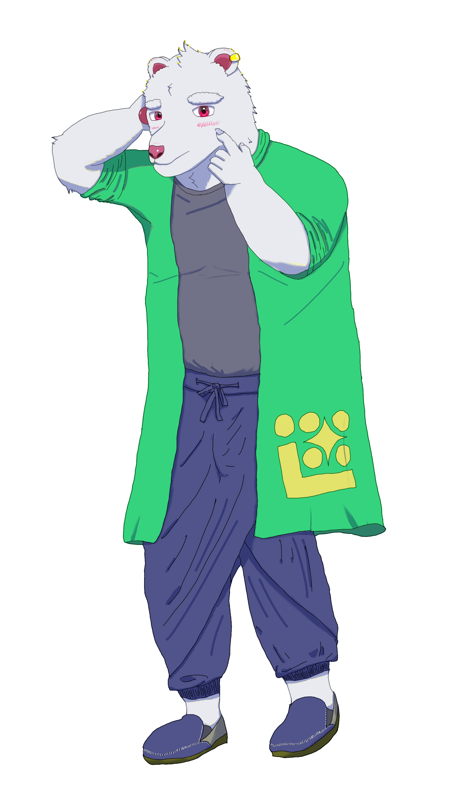

Diff-Singerモデル 熊獣譜ダン

熊獣譜ダンとは
望持トケタがデザイン,CVを担当したDiffsingerモデルである
キャラクタープロフィール
Name : 熊獣譜ダン (YujufuDan)
First Name : Dan
Last Name : Yujufu
CV : 望持トケタ
年齢 : 20歳
性別 : オス
種族 : 熊獣人
身長 : 180cm
体重 : 秘密です！
目の色 : 赤
誕生日 : 8月1日
性格 : 優柔不断
好きな食べ物 : 主に小麦粉からなる生地に餡を入れ金属製焼型で円筒形ないし分厚い円盤状に焼成したあの和菓子 "など"
苦手なこと：選択
趣味：今は音楽
author:望持トケタ
同梱のreadme.txtをご確認の上
OpenUtau上でご使用いただけます
(nsf_hifigan vocoderのインストールとOpenUtau内「ツール→設定→高度な設定でベータ版をONにする」の設定が必要です)